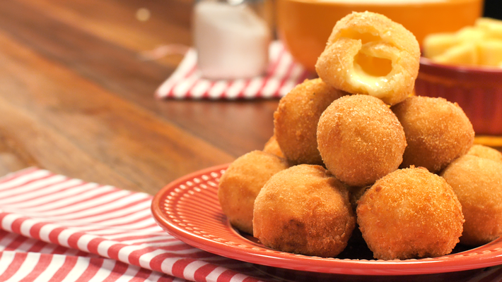

BOLINHA DE QUEIJO:

Rende 30 Porções; Tempo de preparo:40;Dificuldade: Fácil
INGREDIENTES:
Massa.
- 1 Xícara. (chá) de leite
- 1 Xícara. (chá) de farinha de trigo
- 1 Colher. (sopa) de margarina
- 1 Gema.
- 1 Pitada de sal.
- Queijo branco ou mussarela a gosto.
- Óleo para fritar.
MODO DE PREPARO:
- Em uma panela, adicione o leite, a farinha de trigo, a margarina
a gema e o sal.
- Leve ao fogo e mexa com um garfo até que a massa solte da panela
, depois deixe esfriar.
- Modele a massa em bolinhas e recheie com o queijo, depois passe
o bolinho na gema de ovo e na farinha de rosca.
- Em uma panela, adicione o óleo, depois de quente adicione as bolinhas
e frite-as.